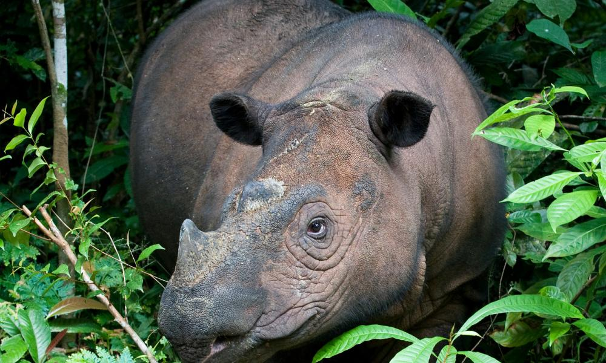
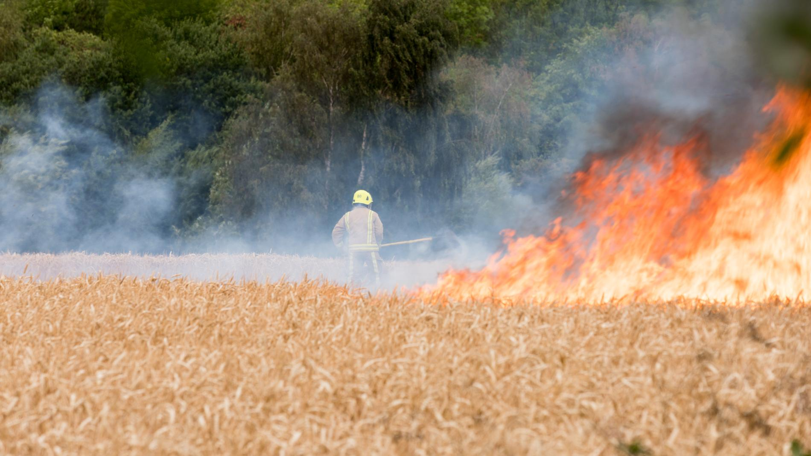
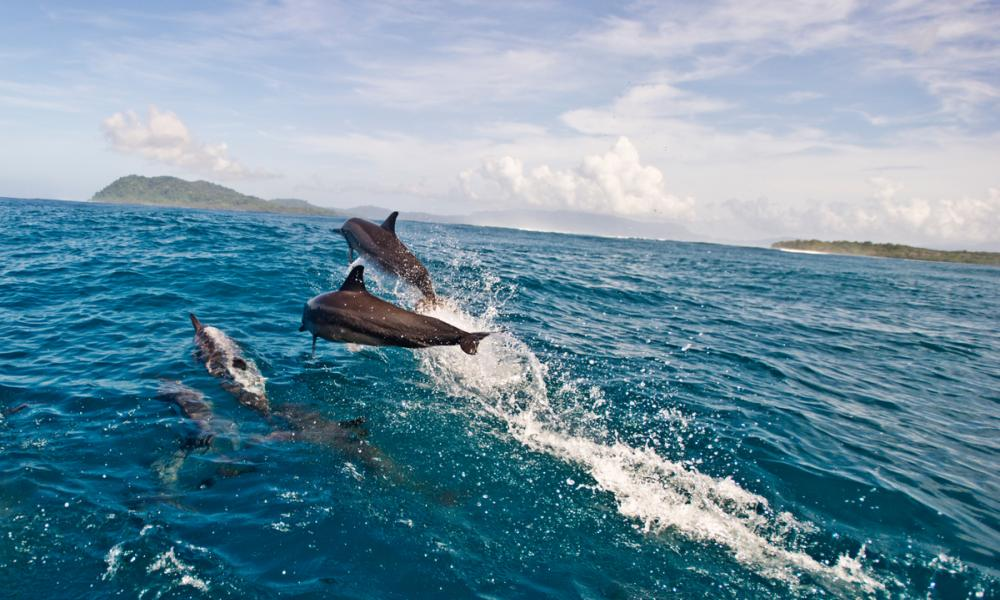
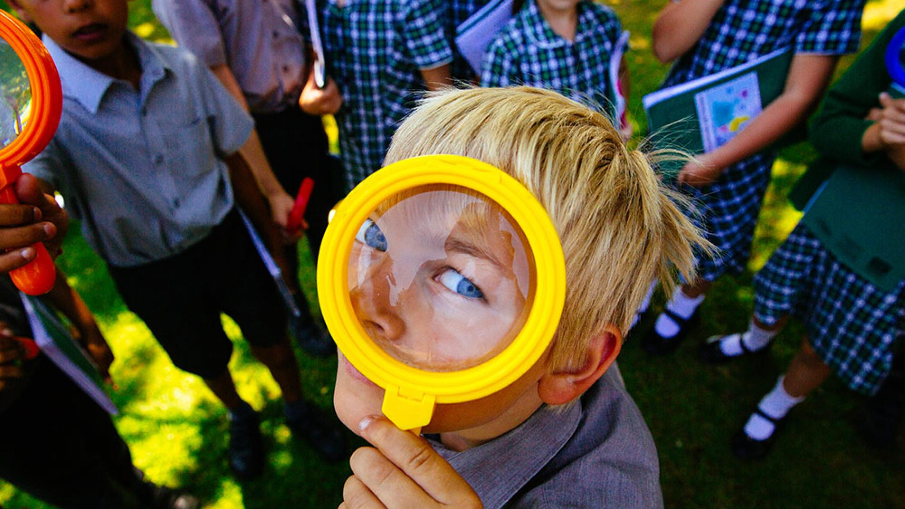

What We Do
-
Wildlife protection and habitat conservation. WWF works to safeguard endangered species such as rhinos, elephants, tigers, and pandas. We focus on protecting forests, grasslands, wetlands, and other critical habitats that are essential for biodiversity. Through scientific research, anti-poaching initiatives, and habitat restoration, we help ensure wildlife can thrive for generations to come.
 -
Climate change awareness and solutions. WWF campaigns for urgent action to address climate change by promoting renewable energy, reducing carbon emissions, and encouraging sustainable lifestyles. We work with governments, businesses, and communities to develop solutions that protect the planet and build resilience against environmental challenges.
 -
Marine and freshwater preservation. WWF protects oceans, rivers, and lakes, addressing threats such as overfishing, pollution, and habitat loss. We work to conserve marine species including dolphins, turtles, and coral reefs, while promoting sustainable fishing practices and clean waterways to maintain healthy ecosystems.
 -
Education and engagement. WWF inspires people of all ages through educational programmes, school initiatives, and community projects. We provide resources and guidance that empower individuals to take action for nature and understand the importance of protecting wildlife, habitats, and the climate for the future of the planet.
